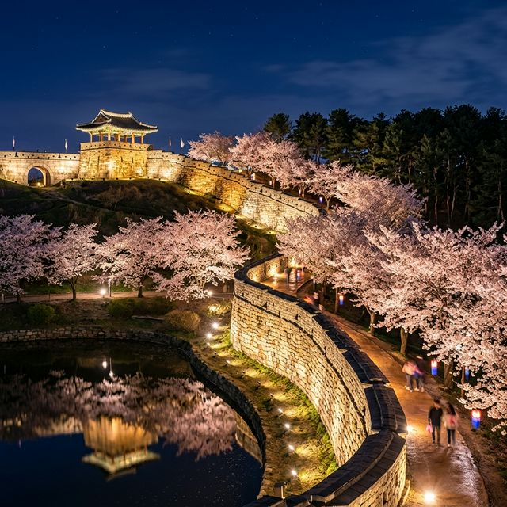
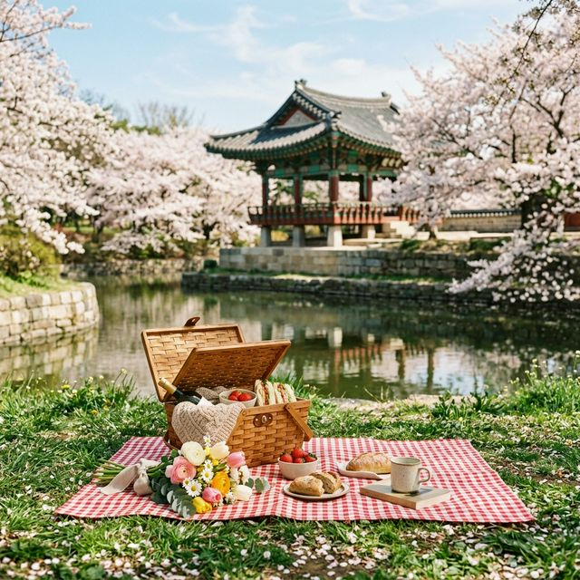

▲ 황금빛 조명과 어우러진 수원화성 성곽길의 벚꽃 터널 야경
낮에 보는 수원화성도 웅장하지만, 진정한 매력은 해 질 녘부터 시작됩니다. 야간관광 100선에 당당히 이름을 올린 이곳은 성벽을 따라 설치된 조명 시스템이 벚꽃의 색감을 더욱 선명하게 살려주는데요. 수많은 포인트 중에서도 벚꽃 시즌 절대 놓쳐서는 안 될 명당 세 곳을 꼽아봤습니다.
가장 화려하면서도 동양적인 미를 자랑하는 장소입니다. 성곽 위에 우뚝 솟은 방화수류정의 우아한 자태와 그 아래 연못인 용연에 비치는 반영은 말 그대로 그림 같습니다. 벚꽃이 연못 수면 위로 떨어질 때면 환상적인 분위기를 자아내죠. 연인들에게는 이미 성지로 통하는 곳입니다.
일곱 개의 수문을 통해 흐르는 물소리와 함께 감상하는 벚꽃은 시각과 청각을 동시에 만족시킵니다. 수문 주변으로 조명이 강하게 들어오기 때문에 장노출 사진을 찍는 작가분들이 가장 사랑하는 포인트이기도 합니다.
장안문에서 화홍문으로 이어지는 성곽길은 벚꽃 나무가 가장 밀집해 있는 구간입니다. 성벽을 따라 길게 이어진 분홍색 띠를 보며 걷다 보면 마치 시간 여행을 떠나온 듯한 착각에 빠지게 됩니다.

▲ 방화수류정 아래 용연 잔디밭에서 즐기는 감성 피크닉
용연 주변 잔디밭은 돗자리를 펴고 앉아 여유를 즐기기에 최적입니다. 낮에는 따스한 햇볕 아래 벚꽃 도시락을 먹고, 밤에는 성곽 조명을 배경으로 맥주 한 잔을 즐기기에 좋죠. 단, 잔디 보호 구역에는 들어가지 않도록 주의해야 하며, 사용한 쓰레기는 반드시 되가져가는 성숙한 시민 의식이 필요합니다. 4월 저녁은 바람이 생각보다 차가우니 담요를 챙기는 것을 잊지 마세요.
수원화성은 전체를 한 바퀴 도는 데 2시간 이상 소요됩니다. 벚꽃이 가장 아름다운 구간만을 쏙쏙 골라 걷는 '벚꽃 최적화 코스'를 제안해 드립니다.
| 구 구간 | 소요 시간 | 주요 관람 포인트 |
|---|---|---|
| 화서문 → 장안문 | 20분 | 성벽 밖 산책로의 울창한 벚꽃 터널 |
| 장안문 → 화홍문 | 15분 | 웅장한 성문과 어우러진 벚꽃 뷰 |
| 화홍문 → 방화수류정 | 10분 | 수문과 연못, 야경의 정점 |
| 방화수류정 → 창룡문 | 25분 | 플라잉수원 열기구와 성곽 선형 감상 |
이 코스를 따라 걷다 보면 수원의 과거와 현재가 섞이는 묘한 경험을 하게 됩니다. 특히 창룡문(연무대) 인근에서 밤하늘로 솟아오르는 '플라잉수원' 열기구를 보는 것도 큰 즐거움입니다. 직접 타보지 않더라도 그 거대한 풍선이 야경의 한 조각이 되어 아름다운 풍경을 완성해 주거든요.
▲ 벚꽃 핀 수원 도심 위로 떠오르는 플라잉수원 열기구의 장관
수원화성, 특히 행궁동 일대는 주말이면 '주차 지옥'으로 변합니다. 가급적 대중교통(수원역에서 버스 환승)을 이용하시길 강력히 권장하지만, 부득이하게 차를 가져오셔야 한다면 다음 정보를 참고하세요.
주말 오후 2시 이후라면 공영주차장 진입에만 1시간 이상 소요될 수 있습니다. 팁을 하나 드리자면, 조금 멀더라도 수원시청이나 팔달구청 주차장을 이용하고 성곽까지 천천히 걸어오는 것이 정신 건강에 이로울 수 있습니다.
성곽 주변의 행궁동은 일명 '행리단길'로 불리며 수많은 맛집이 모여 있습니다. 벚꽃 구경 후 들르기 좋은 곳들을 엄선했습니다.